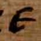
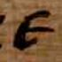
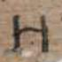
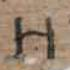

 


Welcome!
Thank you for your interest in the AL-PUB Dataset.
AL-PUB contains 195,683 tightly cropped images of characters from ancient Greek Papyri. The dataset was developed using volunteer crowdsourced annotations of 12,070 manuscript fragments from the Oxyrhynchus Papyri collection. The annotations are a product of the Ancient Lives Project and include samples from all 24 characters in the standard Greek alphabet. AL-PUB is a subset of the currently unpublished AL-ALL Dataset. Roughly half of AL-ALL are from currently unpublished manuscripts and due to image rights and ongoing papyrological research cannot be made publicly available at this time. Both datasets were developed with machine learning and optical character recognition in mind and we hope the dataset will be a valuable alternative to other large scale machine learning, character image datasets, especially for digital humanities research. This project is a collaboration of Middle Tennesssee State University, The University of Tennessee, The University of Kentucky, and The University of Minnesota.
Further Information
All images in the AL-PUB Dataset are derivatives of images owned by the University of Oxford & the Egypt Exploration Society. Copyright information is available at http://www.papyrology.ox.ac.uk/POxy/. Please also visit our web tool Theia. Additional information on the dataset and related research can be found in our IEEE eScience 2021 publication (link below). We offer the dataset freely to the machine learning and humanities communities and humbly ask that you reference our paper in your work.
Bibtex
@inproceedings{Swindall2021,
title={Exploring Learning Approaches for Ancient GreekCharacter Recognition with Citizen Science Data},
author={Swindall, Matthew I. and Croisdale, Gregory and Hunter, Chase C. and Keener, Ben and Williams, Alex C. and Brusuelas, James H.
and Krevans, Nita and Sellew, Melissa and Fortson, Lucy and Wallin, John F.},
booktitle={2021 17th International Conference on eScience (eScience)},
pages={128--137},
organization={IEEE}
}
Acknowledgments
This research is made possible by the thousands of Zooniverse volunteers who participated in the Ancient Lives project over the past decade. We recognize these volunteers and thank them for their efforts in spurring advances not only across the humanities, but also, now, the sciences. We also thank the Imaging Papyri Project at the University of Oxford for providing access to the digitized manuscript images as well as the Egyptian Exploration Society for providing access to the Oxyrhynchus Papyri. This research was partially funded by the Andrew W. Mellon Foundation and The Chellgren Center for Undergraduate Excellence.